6.810 Engineering Interactive Technologies (fall 2021)
Lab 13: Rotoscopes
In this lab, you are going to create a rotoscope of your multi-touch pad. Rotoscopes are drawings that capture the essential aspects of the object you are showing. This can be helpful to communicate the concept of a technology to an audience or to showcase your work on a project portfolio.

Steps:
Deliverables
At the end of the lab, upload to your student google drive:- the underlying
photo(.png or .jpg) you used for your rotoscope - a
rotoscope(.pdf) of yourmulti-touch padwith afinger touchingand a laptop or other computer display in the background showing theblob detectionworking, the most important technical components should belabeledto facilitate understanding what is going on in your drawing
Help us Improve Class Materials for Lab13:
Please let us know if you had any trouble with the drawing software or if anything was confusing in the write up.
You can add your comments here.
Please let us know if you had any trouble with the drawing software or if anything was confusing in the write up.
You can add your comments here.
(1) Useful Features of Rotoscopes
Tracing Outlines on Photo rather than Freehand Drawing: Rotoscopes aredrawings made on top of photos. The photo is deleted at the end, leaving you with a nice clean visual. I'm terrible at drawing, this is why I love rotoscopes! You only need to trace the outlines of the photo, which is much easier than freehand drawing!Below are some examples from our research papers that show how a photo was translated into a drawing:
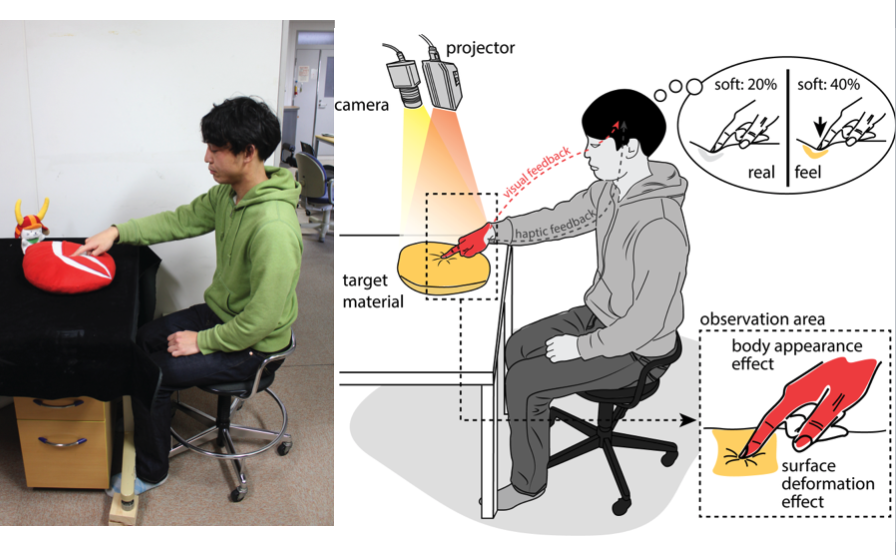
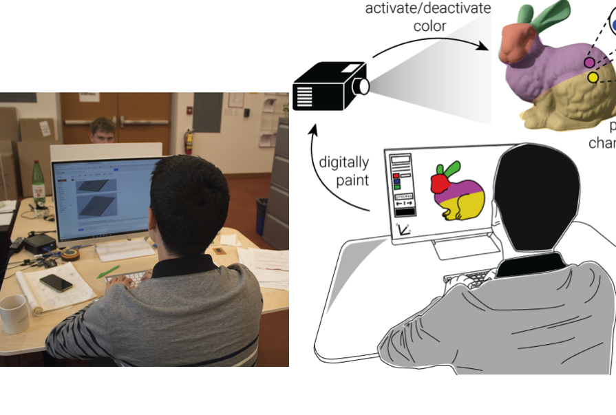
Focusing on the essential idea: Rotoscope allow to
communicate ideas without focusing too much on the details, i.e. they are more abstract and thus often easier to comprehend. Note how, for instance, in the photos above, there is a lot of stuff in the background, which gets removed when you convert the photo into a drawing.More Scalable: Rotoscopes are also
more scalalable than photos since they consist of only vector lines rather than pixels. Below are some images from the Understanding Comics book that highlight these ideas.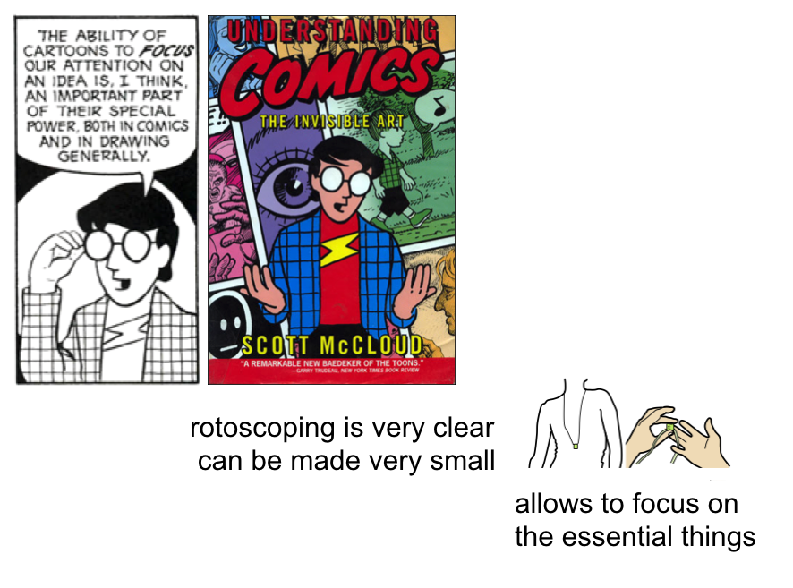 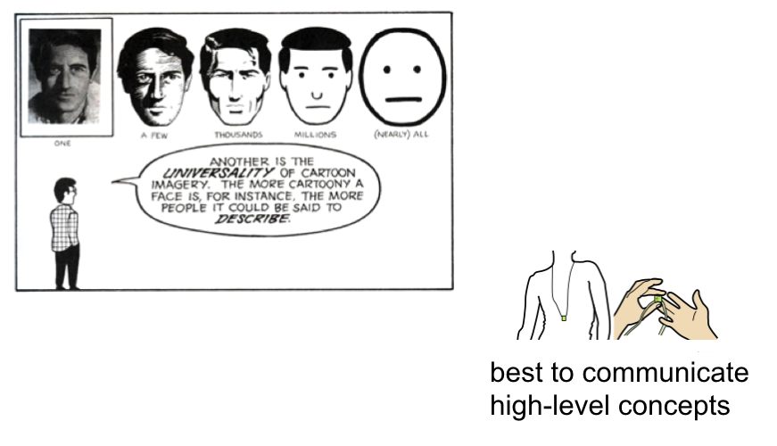
(2) Tips & Tricks for Drawing Rotoscopes
There are many things you can do to make your rotoscope look better, below we only focus on a few tips, which immediately improve the quality of your drawing.Thick Outlines: We recommend you use a
thicker outline for all the lines that are on the outside of your object (e.g. the edge of the multi-touch pad) and thinner lines for everything inside (e.g. the individual rectangles of the electrodes).No need to trace all lines: If you trace every single line in a photo, your drawing will look
cluttered. Instead, think about which lines are really essential to capture the shape and only draw those, discarding the rest. In the example below, we don't need to draw all the lines inside the hand, instead we only drew a single line to indicate the thumb.Fill Colors: No need to go super fancy on fill colors, it is often more effective to use a
single color to not distract too much from the essential message the drawing should communicate.
The rotoscopes come from this paper:
Back-of-device interaction allows creating very small touch devices (CHI 2009)
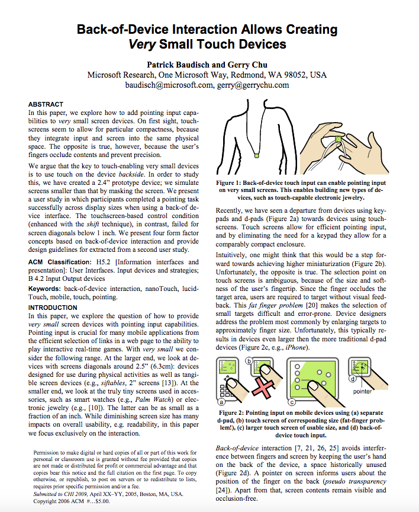 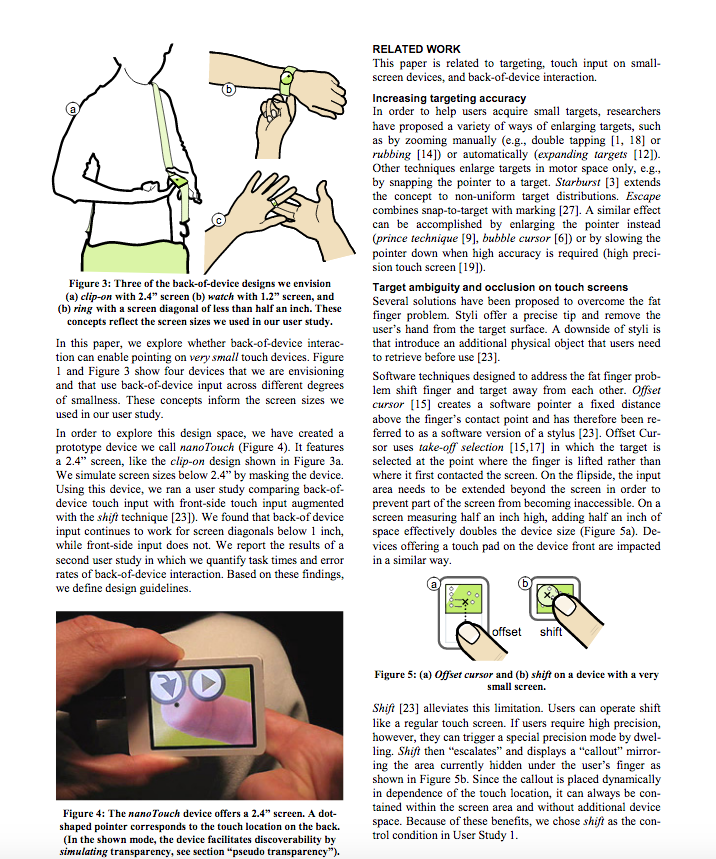 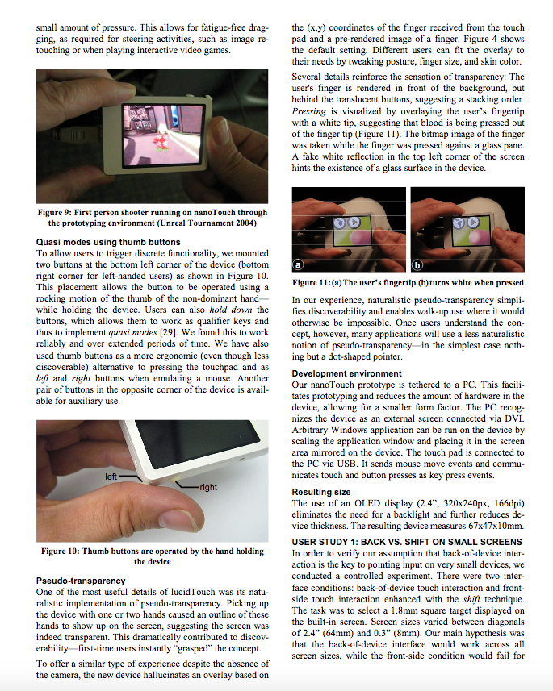 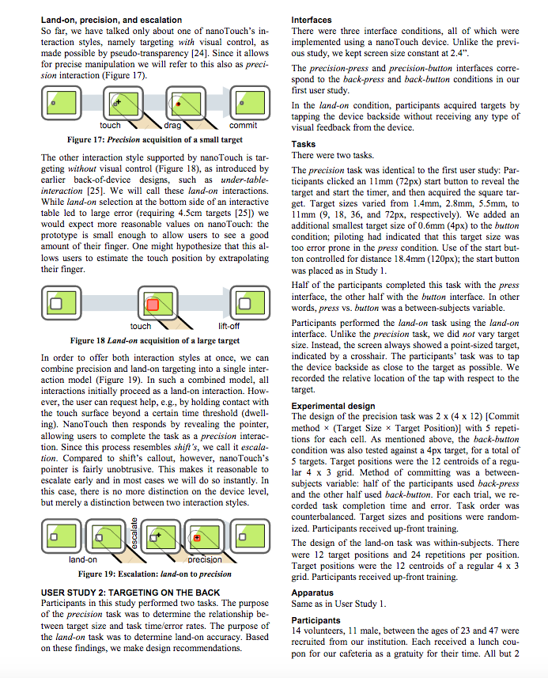
And one more:
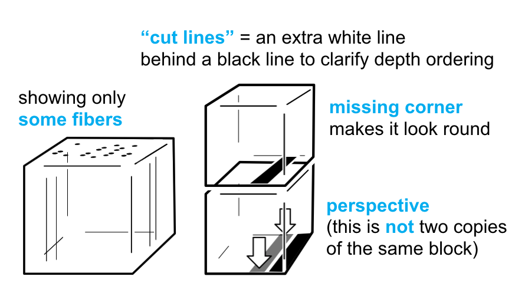 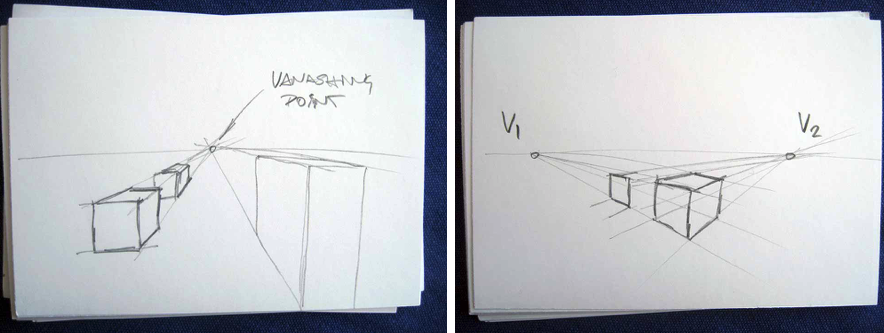
They come from this paper:
Lumino: tangible blocks for tabletop computers based on glass fiber bundles (CHI 2010)
 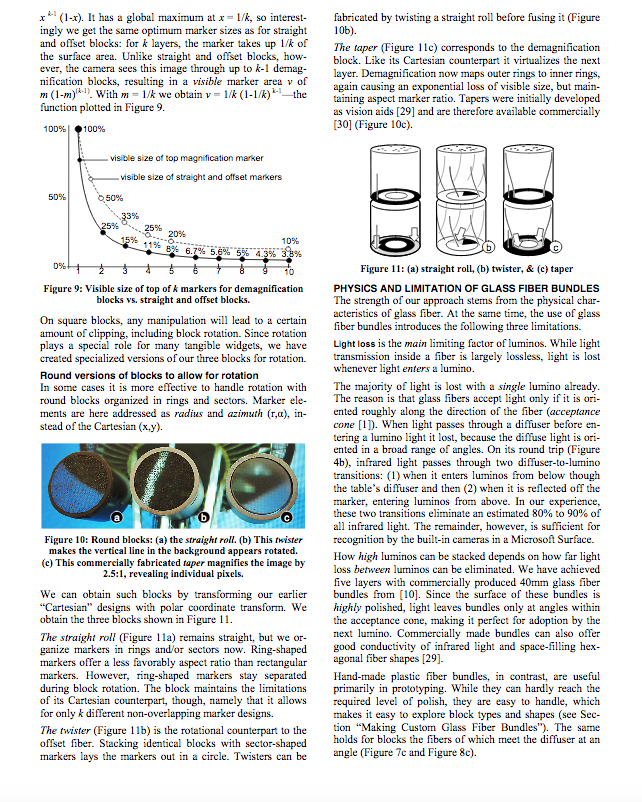
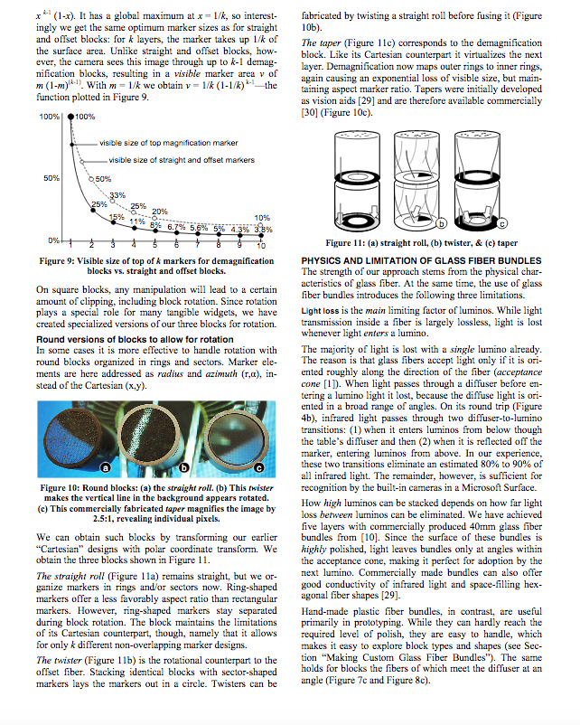

Make yourself a template file so everything is consistent
Make sure all your drawings are consistent (not that one has 0.75pts outline and the next 0.5pts, it just looks messy and distracts). Here's what I use for paper figures.
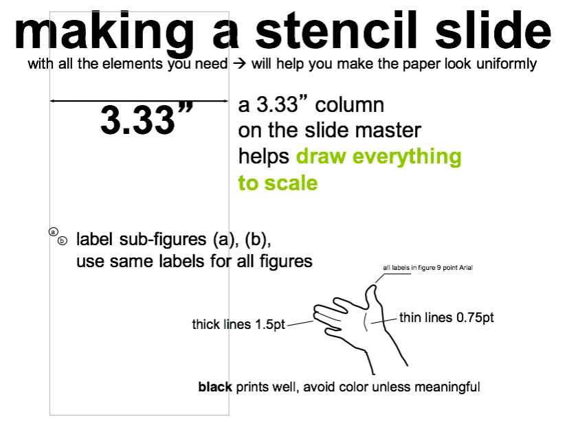
Getting Started with your Multi-Touch Pad Drawing
Open your drawing program.
We have instructions for Adobe Illustrator, inkscape, and OpenDraw.
Then follow the instructions below.
We will show the instructions at the example of the pen grippers but you need to create a drawing of your multi-touch pad. Do not submit a drawing of the pen gripper, that's not what we want.
You can see the initial photo (left) and the resulting rotoscope (right) below:
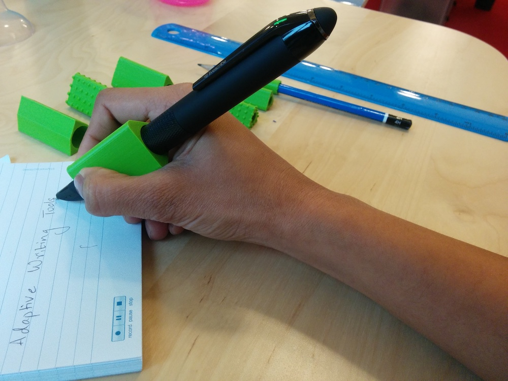 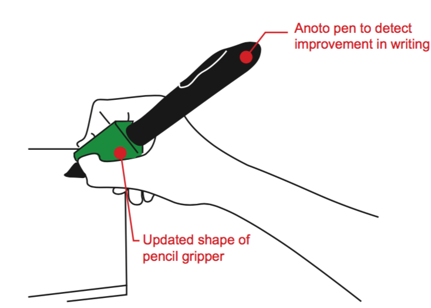


(2) Take Photo of Multi-Touch Pad
Take Photo: First, start bytaking a photo of your multi-touch pad from your preferred angle showing the pset4 blob detection in the background on your laptop display when a finger is touching (see examples above). Make sure all of these things are present. Instead of taking a new photo, you can also look at the pset4 video you submitted and see if you can extract a frame from there (e.g., take a screenshot). If you did not finish pset4, let us know and we can provide you with a photo.Adobe Illustrator
General Shortcuts:
Zooming: shift + mouse scrollwheel
Panning: spacebar + left mouse click dragging the canvas
Placing the image:
1) Drag the image from the desktop onto your canvas.
2) Scaling Image while keeping aspect ratio: hold shift + drag corner of image
3) Scaling Image from both sides equally: hold shift + alt + drag corner of image
4) Locking the image on the canvas so it cannot be moved accidentially: Menu: Object -> Lock -> Selection
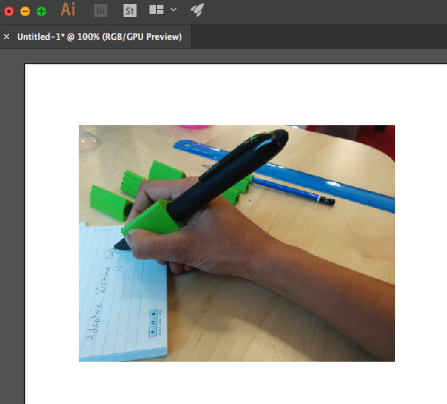
Create a new Layer for your drawing:
Layer 0 will be the photo, Layer 1 will be the drawing so you activate/deactivate it.
1) Windows -> Layers (this should pop up a window that already has Layer 1)
2) Add new Layer -> Layer 2
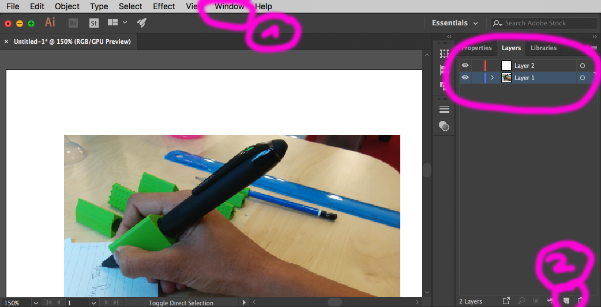
Start Drawing
1) We will mainly use the pen tool (shortcut: P) from the tools.
2) Make sure you have the right line color selected (I use white as a good contrast against the black pen), make sure you have no infill as it's otherwise hard to see the photo)
3) Make sure you are drawing on the right layer (i.e. layer 2). In case you draw on the wrong layer, you can always just select your path, cut it out (command + c), then select the layer 2, then press command+f for pasting in place.
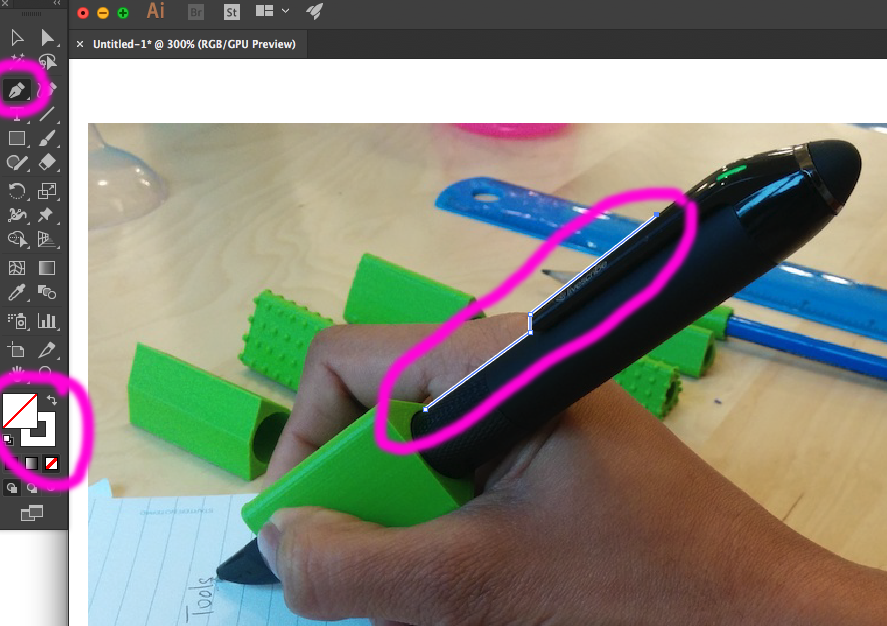
4) Using the pen tool:
- Clicking with the pen tool creates a path of line segments (not nice looking curves).
- Instead, when you click for the next path point, keep the mouse pressed and drag, you should see a curve now.
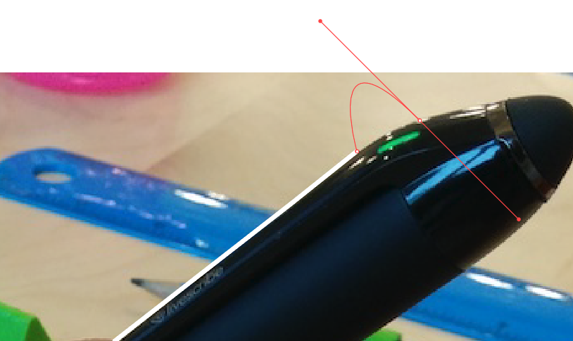 - If you need to move one of the anchor points, you can select the white pointer from the tool bar (not the black pointer), then move the point. This can also be used to adjust the curve handles on the curved path segments. Try it!
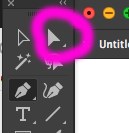 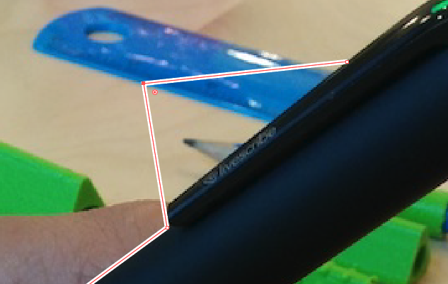 - Here are a few more pen functions that might come in handy. They either appear when you hover over an anchor point or the path or you can select them from the menu bar by pressing and holding the button for the pen tool
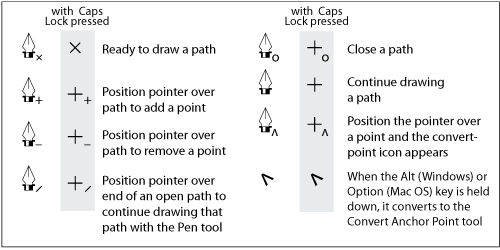 - the underlying
photo(.png or .jpg) you used for your rotoscope - a
rotoscope(.pdf) of yourmulti-touch padwith afinger touchingand a laptop or other computer display in the background showing theblob detectionworking, the most important technical components should belabeledto facilitate understanding what is going on in your drawing